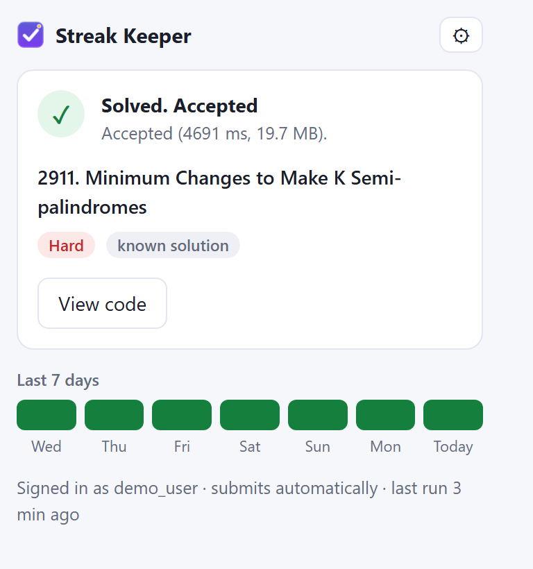
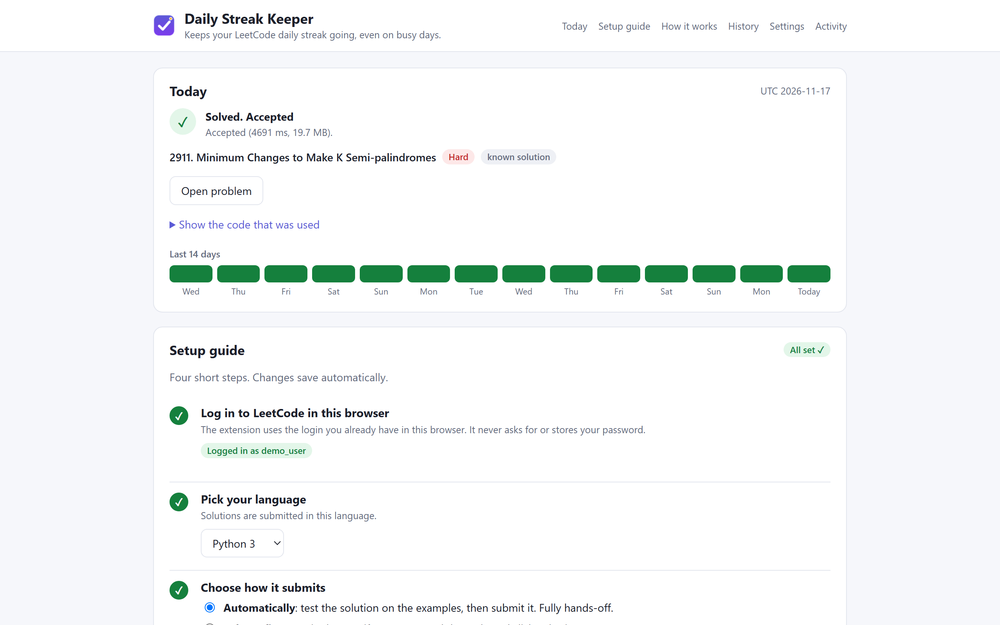

A free Chrome & Edge extension that checks the problem of the day, finds a working solution, tests it on the examples and submits it, while you get on with your day.

It isn't on the Chrome Web Store yet, so you load it yourself. It's safe and takes four steps.
Click Download extension above, then right-click the zip → Extract All (Windows) or double-click it (Mac). Keep the folder somewhere permanent, like Documents.
Go to chrome://extensions (Edge: edge://extensions) and switch on Developer mode.
Click Load unpacked and choose the unzipped folder, the one that contains manifest.json.
A setup page opens. Log in to leetcode.com in the same browser, pick your language, and click Solve today's problem now.
Set it up once. After that it works on its own whenever your browser is open.
Checks every 20 minutes, at browser start-up, when your laptop wakes or comes back online. Once today is solved, it stops checking until tomorrow.
Uses the open-source doocs/leetcode collection, which has community solutions for almost every problem.
Every solution must pass the example tests before it's submitted, and there's a daily submission limit.
For brand-new problems, Gemini, Groq or OpenRouter (your own free key) writes a solution and fixes it using the error output.
Prefer to read the code? It tests a solution, then waits for you to click Submit.
Uses your existing browser login. No password, no server, no tracking. Everything stays in your browser.
Setup checklist, today's status, the code that was submitted, full history and an activity log.

The same steps you'd do by hand, done for you.
No. It uses the login you already have in your browser. You log in on leetcode.com as usual, and the extension never sees or stores your password.
No, the browser has to be open at some point during the day. It checks as soon as the browser starts, so opening it once a day is enough.
No. Known solutions cover almost every daily problem. The AI backup is optional, for brand-new problems, and uses free tiers (Google Gemini, Groq or OpenRouter) with your own key.
LeetCode only accepts requests from its own pages, so the extension briefly opens a background leetcode.com tab to do its work, then closes it.
Chrome 116+ and Microsoft Edge on Windows, Mac and Linux. It works with leetcode.com (not leetcode.cn). Supported languages: Python 3, C++, Java, JavaScript, TypeScript, Go, Rust, C#, Kotlin and C.
This project isn't affiliated with or endorsed by LeetCode, and automated submissions may conflict with LeetCode's terms of service. Use it on your own account at your own risk. It keeps a streak; it doesn't teach you algorithms, so try "Ask me first" mode and read each solution.